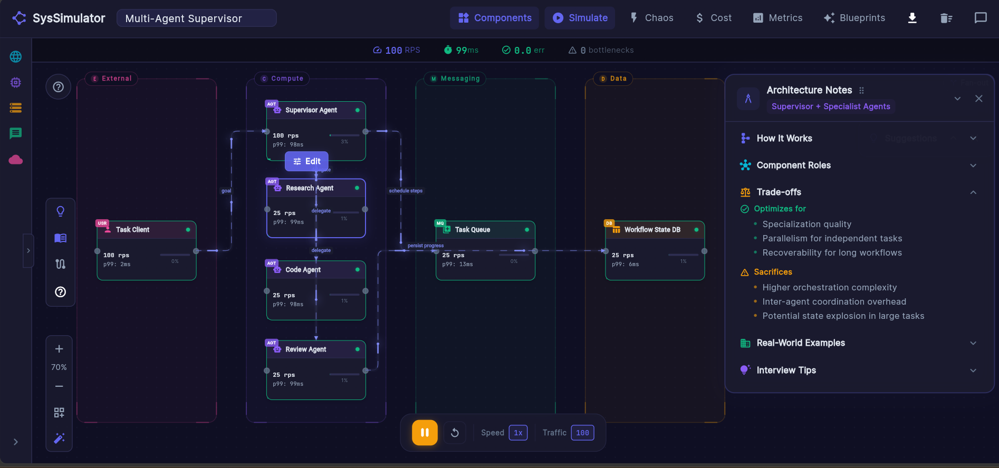

assets/syssimulator.png pending
A multi-agent supervisor blueprint under simulated load: live RPS, p99 latency, and tradeoffs per component.
System Design Simulator
System design would not click for me in college: the diagrams stayed static and the words stayed abstract. So I built a simulator where architectures actually run.
Live at syssimulator.com: put a design under load, inject chaos, and watch queues grow, latency climb, and cost respond.
Event-driven simulation engine with async state propagation across service graphs, compiled to WebAssembly.
- Rust
- WebAssembly
- Flutter Web
syssimulator.com private repo